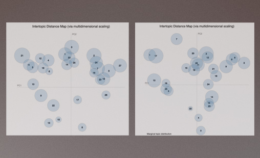
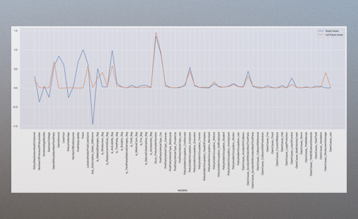
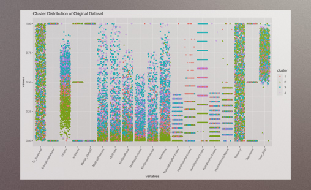
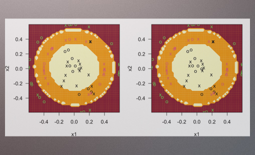

In 2018, my academic journey took a transformative turn when I enrolled in the elective course 'Python in Finance' during my undergraduate studies. Little did I know that this singular decision would set in motion a life-altering experience,
one that ignited a fervent passion for harnessing data science and technology to reshape the landscape of finance.
Since then, I have pursued every opportunity to refine my skills:
I've interned at an AI technology startup, served as a data analyst and data scientist, and committed to a MSc in Business Analytics.
This journey has equipped me with a deep understanding of financial analysis, statistical modeling, and the practical application of data science.
My dedication to the data science in finance is unwavering, and I am determined to continue this journey with zeal.
I am confident that my enthusiasm and expertise will lead to exceptional performance in my chosen career path.
Network Analytics & Dynamic Visualisation

Visualised and analysed the intricacies via NetworkX of Brazil's flights network across different phases: pre-COVID, during the pandemic, and post-COVID.
Natural Language Processing

Collaborated with BoE & identified risks of the 59 regulated insurers. Implementing LDA, DTM, Sentiment Analysis, We found patterns of predictable risks, such as catastrophes, disasters, and economic risks.
Deep Learning - TensorFlow CNNs & RNNs

Given the sensor readings over time, we applied Deep Learning CNNs to know whether the turbine is operating correctly, knowing if issues are present to alleviate them before a major system failure occurs.
Deep Learning - SMOTE & AutoEncoder

Created multiple models to help the insurance provider target its investigation efforts. Applied SMOTE method to synthetically create new data & made the dataset more balanced.
Unsupervised Machine Learning

Comprehensively analysed customer personality data through Factor Analysis & k-mean clustering, providing empirical results and actionable recommendations for enhanced consumer engagement.
Supervised Machine Learning Methodologies

Leveraged extensive expertise in dcredit ata analysis and advanced modeling, adeptly applying decision trees, random forests, kNN, and LDA for classification tasks, with result interpretation in GitHub.